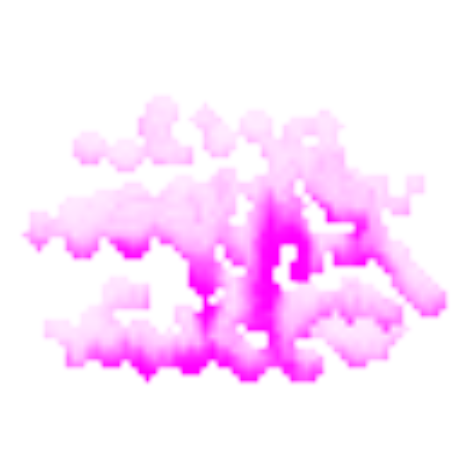
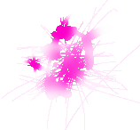

CS 184 Final Project Report, Spring 2026
Team Dubuworld
Daeyoung Kim, Jaegyeom Kim, Brian Sui, Shenrui Wu
AquaCanvas is a real time watercolor painting tool built in Godot 4.4.1 that simulates physically based fluid dynamics entirely on the GPU. The simulation runs five compute shader stages (evaporation, force calculation, water and pigment transport, deposition, and diffusion) each frame on a 256×256 canvas at interactive frame rates. Starting from a CPU prototype that could only run at 64×64, we ported the entire physics pipeline to GLSL compute shaders via Godot's RenderingDevice API. The final tool supports pressure sensitive brushes (Wacom tablet), canvas tilt, real time physics parameter adjustment, and PNG export. The result is a painting tool that produces recognizable watercolor effects like wet on wet bleeding, edge darkening, and gravity driven dripping, all of which emerge naturally from the physics rather than from textures or tricks.
At the milestone we had a CPU based simulation running at 64×64. All five physics stages were working but everything ran in GDScript on the CPU, which was too slow for larger canvases. The milestone was the reference we validated the physics against before moving to GPU.
We rewrote the entire simulation as GLSL 450 compute shaders dispatched through Godot's RenderingDevice API. Each shader runs in 8×8 work groups over the full 256×256 canvas. All textures use R32G32B32A32_SFLOAT format and are double buffered (shaders read from one copy and write to the other) to avoid read/write conflicts. The five stages run in order every frame:
We deviated from the David Small formulation for water redistribution. The paper's scheme produced a checkerboard artifact at our grid scale, so we switched to a 4-directional displacement approach where each cell computes its outflow to each neighbor independently before any values are updated.
Brush strokes are applied via an add_paint.glsl shader that uploads a circular dab at the stroke position each frame. A per stroke pixel mask prevents repainting the same pixel twice within one stroke, eliminating the opacity doubling artifact that appears with naive blending. The removing brush uses Beer-Lambert mass conversion (alpha = 1 - exp(-K * mass)) so removal is consistent across alpha values and works on the mobile layer first before touching the dried static layer.
add_paint.glsl shader once per event in sequence rather than waiting for the next frame, which eliminated the gaps without increasing per frame GPU cost.texture_update() and texture creation are not equivalent operations even when the data is the same.Final demo video (replace embed ID with final video when uploaded).

Sample paintings showing wet on wet bleeding and edge darkening.

Left: gravity driven drip from canvas tilt. Right: pigment diffusion effect over time.
| Member | Contributions |
|---|---|
| Daeyoung Kim | Overall project lead. Drove architecture decisions and contributed to every part of the system. Produced demo videos. Participated in weekly algorithm discussion meetings and parameter tuning experiments. |
| Jaegyeom Kim | Contributed to fluid simulation logic and helped resolve the checkerboard artifact. Edited both the milestone and final project videos. Participated in weekly algorithm discussion meetings and parameter tuning experiments. |
| Brian Sui | Assisted in GPU pipeline debugging. Proposed and implemented the CPU-side input buffer to resolve stroke batching latency. Participated in weekly algorithm discussion meetings and parameter tuning experiments. |
| Shenrui Wu | Contributed to the user interface and color representation, including the Beer-Lambert opacity model for the eraser brush. Participated in weekly algorithm discussion meetings and parameter tuning experiments. |